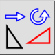
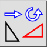
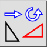
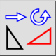

Mover y rotar
Barra de herramienta / icono:
 

Menú: Modificar > Mover y rotar
Acceso directo: M, R
Comandos: moverotate | mr
Esta es una traducción automática.
Barra de herramienta / icono:
 

Menú: Modificar > Mover y rotar
Acceso directo: M, R
Comandos: moverotate | mr
Mueve o copia y rota entidades simultáneamente.